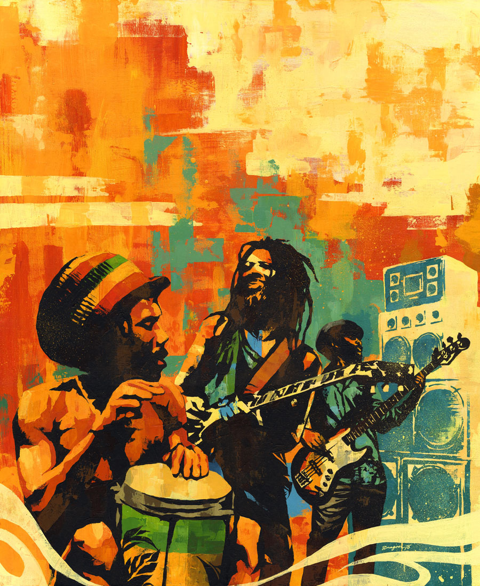

What Is Reggae Music?
The late 1960s saw the development of the reggae musical style by Jamaicans with African ancestry.
Reggae bands use musical idioms from a wide range of genres, such as mento (a Jamaican folk genre), ska,
Calypso, American soul, rhythm and blues, and rocksteady are examples of such music. Propulsive percussion is a hallmark of the genre.
It has become a popular dance music genre thanks to its hypnotic bass lines and steady, up-stroke rhythm guitar (also known as the "skank beat").
Jamaican English, Jamaican Patois, or Iyaric dialects are used for the majority of reggae song lyrics.
Reggae is a distinctive style of Jamaican music that has a strong connection to the Rastafarian religion and social movement, both of which have their origins in 1930s Jamaica.
Rastafarianism is still practised by many reggae singers today. Frequently, Rastafari spiritual themes or social justice are sung by reggae singers, which aligns the
late 1960s genre with other styles of popular music that had emerged, like American folk rock. Hip hop, for example, was influenced by the socially conscious lyrics of reggae.
A Brief History of Reggae Music
Reggae music began in Jamaica, but it quickly spread around the world.
Origin in the ’60s: The Toots and the Maytals song "Do the Reggay" from 1968 is where reggae gets its name. In the same year,
Songs by Larry Marshall, The Beltones, Desmond Dekker, and Lee "Scratch" Perry, such as "Nanny Goat," "No More Heartaches," and "Israelites,"
broke through in Kingston and contributed to the rise of reggae as a major genre in Jamaican popular music.
Rise of Bob Marley: Bob Marley & The Wailers, who are considered to be the most well-known reggae group, were first recognised for their ska and dancehall successes after forming in 1963.
The Skatalites and other modern bands served as inspiration. Yet when reggae gained popularity, musicians like drummer Bunny Wailer, guitarist Peter Tosh, singer Bob Marley, and bassist
Burnin' (1973) and Exodus are only a couple of the songs that Aston Barrett created after embracing the genre (1977).
International popularity: When Marley's song "I Shot the Sheriff" was recorded by Eric Clapton in 1974, The Wailers gained a global following. Additional 1970s reggae artists
include Johnny Nash from the United States and Jimmy Cliff, known for the song "The Harder They Come" (who scored a major hit with "I Can See Clearly Now"). Beyond Jamaica, roots reggae acts have prospered;
The English bands UB40 and Steel Pulse have achieved great popularity. King Tubby, Coxsone Dodd, and Lee "Scratch" Perry, who was equally well-known behind the boards as he was in front of the microphone, are notable reggae producers.
Lasting influence: The genres of lovers rock, dancehall, ragga, jungle, toasting, sound systems, drum and bass, and dub music are all variations of reggae. Reggaeton, seggae, two-tone, and samba reggae are modern reggae fusion subgenres.
likewise reggaestep. In places like New York, Miami, and London, several of these genres are even more popular than they are in Kingston.
What Does Reggae Music Sound Like?
Reggae music combines the intensity of soul music, the light touch of ska, and the spiritual center of Jamaican mento. The music is famed for
the rhythmic patterns heard in percussion, bass lines, and rhythm guitar parts. The three principle reggae rhythms are:
Steppers: Similar to the American "four on the floor" feel, this beat features a steady quarter-note pulse on the bass drum, often doubled by the bass guitar.
"Red, Gold, and Green" by Burning Spear is a strong example of the steppers beat.
Rockers: The rockers beat also emphasizes four quarter notes per bar, but it offers more space for syncopation. The rockers beat is closely associated with the
rhythm section of Sly and Robbie, who helped develop the famous "rub-a-dub" sound. "Sponji Reggae" by Black Uhuru is another strong example of the rockers beat, thanks to its 4/4 pulse combined with offbeat syncopations.
One drop: The one-drop beat features a steady sixteenth-note pulse (like American funk music) with a backbeat accent from the kick drum and snare drum. It takes its name from the song "One Drop" by Bob Marley & The Wailers.

6 Essential Reggae Instruments
Reggae bands use the same core instrumentation as American rhythm and blues bands. The most common reggae instruments are:
1. drums
2. bass guitar
3. electric guitar (many bands have both a rhythm guitar and lead guitar player)
4. keyboard
5. lead vocals
6. horn section (or synth horns)
ontemporary reggae offshoots like reggaeton, dancehall, and drum and bass often use synthesizers and drum machines.